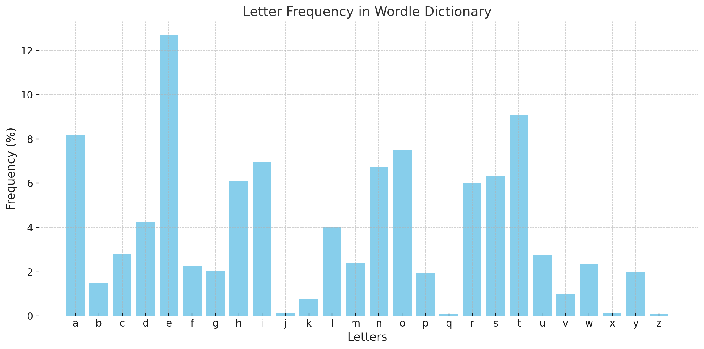
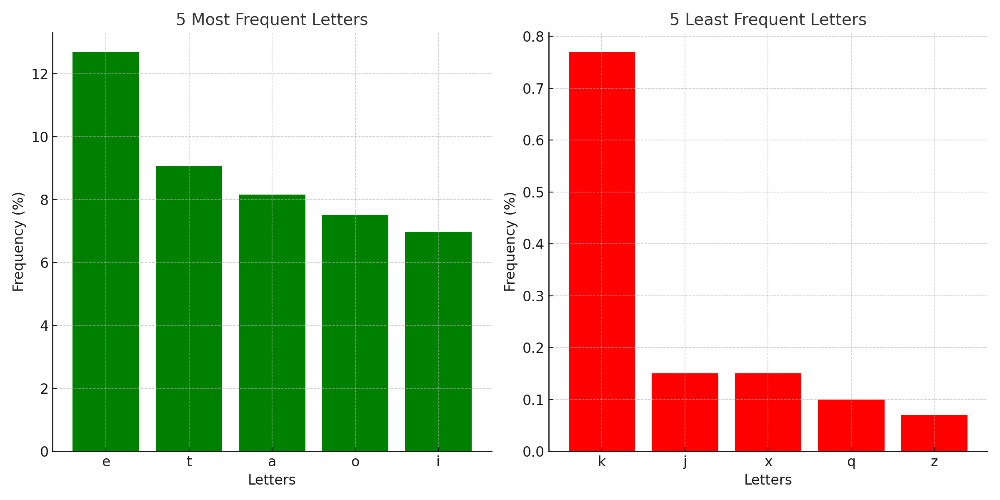
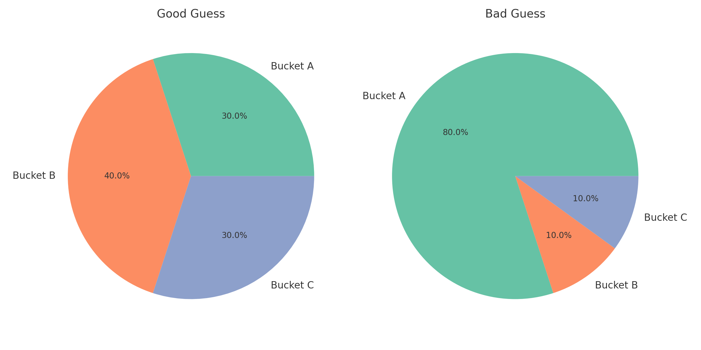

Day 4 - Entropy, Statistics, and Wordle?
05 Jan 2025Building a Wordle Analysis Tool
Introduction
Yesterday, we explored using Python and Streamlit to create a simple web application. Today, we’re taking it further by combining web development with data science principles to solve a fun and popular challenge: Wordle!
Wordle is an excellent playground for applying basic statistics and data science. It’s simple, relatable, and offers plenty of opportunities to explore probability, entropy, and decision-making. To make things even better, I’ve built and deployed a Wordle Solver app using Python and Streamlit. You can try it out here, or explore the code on GitHub.
Part 1: Why Wordle Makes for a Great Data Science Playground
-
Popularity and Familiarity
Wordle is a household name, with its straightforward rules and universal appeal. This makes it an ideal starting point for demonstrating data-driven decision-making. -
Data/Stats in Action
Each guess in Wordle provides valuable feedback, narrowing the list of possible solutions. By analyzing this feedback, we can make smarter guesses. -
Simple, Yet Complex
Wordle combines simplicity with strategic depth, making it a fantastic problem for exploring probability, statistics, and entropy.
Visualization: Here’s a chart showing the frequency of letters in the Wordle dictionary. Notice how vowels like E dominate while less common letters like Z barely register.

Most and Least Frequent Letters: Below are the 5 most and 5 least frequent letters in Wordle.

Why Letter Frequency Analysis Matters
In Wordle, the first guess is critical—it sets the stage for everything that follows. A good first guess uses common letters, increasing the likelihood of a match.
For example:
- Words like CRANE or SLATE maximize the use of frequent letters (
E,A,T). - Conversely, words with rare letters, like QUIZ or JUMPY, are less effective at the start.
Part 2: What is Entropy (and Why Does It Matter)?
Entropy in Information Theory
Entropy is a measure of uncertainty. In Wordle, entropy helps us determine which guess provides the most “information gain.” A good guess splits the remaining word list into evenly distributed subsets based on possible feedback patterns.
Why High Entropy is Better
A high-entropy guess:
- Reduces the solution space more effectively.
- Ensures you don’t leave too many possibilities after one guess.
Example:
- A good guess splits 100 possible solutions into groups of 25, 25, 25, and 25 (high entropy).
- A bad guess leaves one group with 90 solutions and another with 10 (low entropy).
Visualization: Good vs. Bad Guesses
Below are examples of how good and bad guesses partition the solution space:

Part 3: Step-by-Step Instructions to Build the Wordle Solver App
Prerequisites:
- Install Python (3.7 or later).
- Install Streamlit:
pip install streamlit - Download the word lists: words_alpha.txt and words_enable.txt from GitHib (https://github.com/j-abed/wordle-solver)
Step 1: Create the MVP (Minimal Viable Product)
File: wordle_solver.py
- Set up the environment: Create a new Python file
wordle_solver.py. - Load the Wordle word list:
def load_words(file_path): with open(file_path, 'r') as file: return [line.strip() for line in file if len(line.strip()) == 5] word_list = load_words('words_alpha.txt') - Filter words based on feedback:
def filter_words(word_list, guess, feedback): filtered = [] for word in word_list: valid = True for i, (g, f) in enumerate(zip(guess, feedback)): if f == 'g' and word[i] != g: # Green valid = False elif f == 'y' and (g not in word or word[i] == g): # Yellow valid = False elif f == 'b' and g in word: # Black valid = False if valid: filtered.append(word) return filtered - Add Streamlit UI:
import streamlit as st st.title("Wordle Solver (MVP)") guess = st.text_input("Enter your guess:") feedback = st.text_input("Enter feedback (e.g., G for green, Y for yellow, _ for gray):") if st.button("Filter Words"): filtered_words = filter_words(word_list, guess, feedback) st.write("Remaining possible words:", filtered_words) - Run the MVP app:
streamlit run wordle_solver.py
Step 2: Add Entropy-Based Enhancement
File: enhanced_wordle_solver.py
- Simulate feedback for all guesses:
def evaluate_guess(solution, guess): feedback = ['b'] * 5 # Default to black (incorrect) solution_chars = list(solution) # Green matches for i, (s, g) in enumerate(zip(solution, guess)): if s == g: feedback[i] = 'g' solution_chars[i] = None # Yellow matches for i, g in enumerate(guess): if feedback[i] == 'b' and g in solution_chars: feedback[i] = 'y' solution_chars[solution_chars.index(g)] = None return ''.join(feedback) - Calculate entropy for each word:
import math def calculate_entropy(guess, possible_words): feedback_buckets = {} for word in possible_words: feedback = evaluate_guess(guess, word) feedback_buckets[feedback] = feedback_buckets.get(feedback, 0) + 1 total = sum(feedback_buckets.values()) entropy = -sum( (count / total) * math.log2(count / total) for count in feedback_buckets.values() ) return entropy - Enhance the Streamlit UI:
if st.button("Get Best Guess"): entropy_scores = {word: calculate_entropy(word, word_list) for word in word_list} best_guess = max(entropy_scores, key=entropy_scores.get) st.write("Best next guess:", best_guess)
Part 4: Experiment with the Colab Notebook
Want to try your own experiments with Wordle strategies? I’ve created a Colab Notebook where you can:
- Load the Wordle word list.
- Simulate guesses and calculate entropy.
- Explore which guesses work best for narrowing down possibilities.
Part 5: Conclusion
With this app, you’ve built a fully functional Wordle solver that combines Python, Streamlit, and basic data science principles. Whether you’re playing Wordle or exploring applied statistics, this project demonstrates the power of data-driven decision-making.
Next Steps: How can these concepts extend to other games or real-world problems? Stay tuned for Day 5!